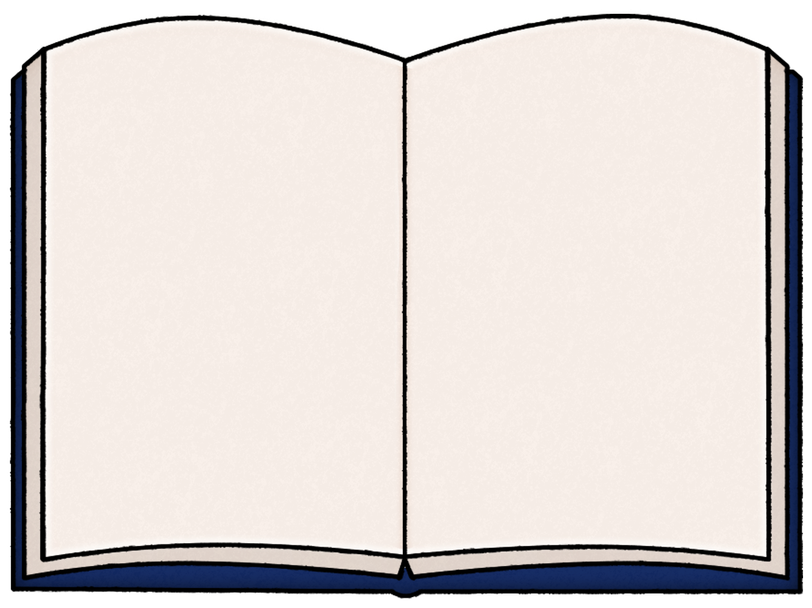
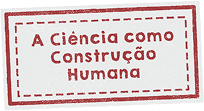
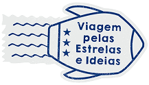
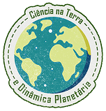
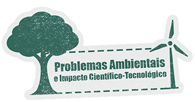

Você deve selecionar um local, pode ser uma visita virtual ou presencial
- Parque municipal ou reserva natural
- Lago, rio ou praia para observar erosão e sedimentação
- Museu de geociências
Alternativas virtuais
- Google Earth para explorar formações geográficas LINK
- Documentário da National Geographic sobre vulcanismo
Nesta trilha, vamos olhar para o chão, para as pedras, para as formas da paisagem. A Terra está sempre mudando — e você vai descobrir como observar esses movimentos!

PassaporteNome do Aluno(a)
Local
Check-in em
Local
Descrição do local
Tarefa
Observar elementos geológicos na paisagem local.
Exemplos: relevo, rochas, camadas de solo, erosão, sedimentos, inclinações, paredões, barrancos etc.
Quando olhamos uma paisagem, não estamos vendo apenas ‘um lugar bonito’. Estamos vendo pistas do passado da Terra! Vou te mostrar como registrar isso de forma simples.
Como fazer o registro da observação geológica
O estudante deve registrar:
-
Identificação da observação:
- Data
- Local
- Horário
- Condições do ambiente (sol, chuva, solo úmido, etc.)
-
Descrição objetiva do que vê
- Tipo de rocha ou solo (areia, argila, cascalho, pedregulhos, rochas grandes)
- Formas do relevo (morros, vales, barrancos, paredões, depressões)
- Evidências de erosão (sulcos, deslizamentos, terra exposta, raízes à mostra)
- Deposição de sedimentos (areia acumulada, lama, cascalho sendo transportado)
-
Exemplos de processos naturais relacionados
- Erosão: ação da água, vento, chuva
- Sedimentação: acúmulo de materiais em rios, margens, praias
- Intemperismo: desgaste das rochas
- Movimentos tectônicos antigos: dobramentos, fraturas
- Vulcanismo: quando visitado virtualmente
Use este espaço para registrar a sua atividade
Pergunta de reflexão
Quais processos naturais podem explicar as formas observadas na paisagem?
Registrar é como montar um quebra-cabeça da natureza: cada detalhe conta uma parte da história do planeta.

Escreva:
- O que mais chamou sua atenção
- O que aprendeu
- Conexões com a teoria da Semana 4
- Representações (esquemas, desenhos, setas, mapas, se quiser)
As pedras e o solo guardam memórias antigas. O que você descobriu sobre a história desse lugar?
Reflita: como essa experiência pode inspirar práticas para EI e EF I?
Algumas ideias possíveis:
- Observar diferentes tipos de solo com as crianças; comparar pedras, texturas e cores
- Fazer experimentos simples de erosão (água em uma bandeja de areia)
- Criar “mini relevo” com massinhas
- Ler histórias sobre vulcões, montanhas e rios
- Explorar mapas e imagens de satélite com as turmas maiores do EF I
Escreva suas ideias, mesmo que ainda estejam em rascunho.
As crianças adoram descobrir o que existe ‘lá embaixo’. Como você levaria essa curiosidade para sua futura sala de aula?
Jornada “Ciência na Terra e Dinâmica Planetária – Trilhas da Terra em Movimento” concluída!
Parabéns por concluir mais uma etapa da sua jornada!
Você explorou os movimentos da Terra, os fenômenos naturais e a dinâmica do planeta que habitamos — conhecimentos fundamentais para tornar o ensino de Ciências mais contextualizado e significativo.
Carimbo garantido! Agora vamos preparar o olhar para pensar nos desafios ambientais e no futuro do planeta. Vejo você na próxima trilha!



